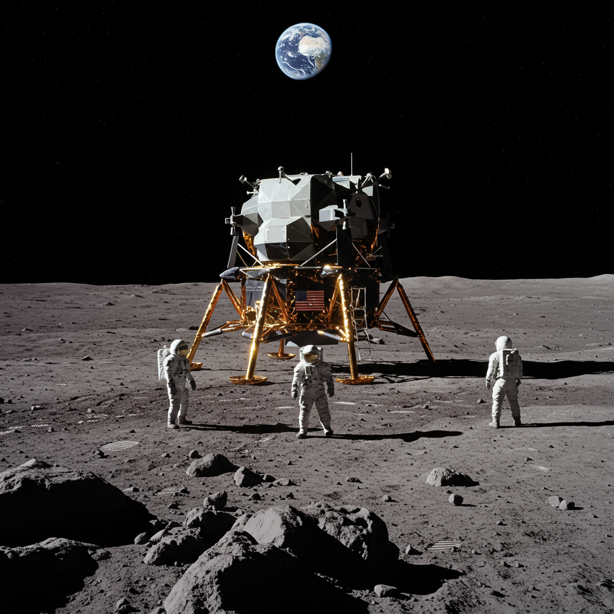

Apolo 15
Agencia: NASA
Fecha de lanzamiento: 26 de julio de 1971
Duración: 12 días, 7 horas, 12 minutos
Tipo de misión: Misión tripulada a la Luna
Objetivo: Explorar la región de Hadley–Apennine y realizar estudios científicos avanzados
Carga científica: Rover Lunar (LRV), cámaras, instrumentos de espectrometría, perforadoras, sismómetros, retroreflectores láser
Impacto histórico
Apolo 15 marcó un antes y un después en la exploración lunar. Fue la primera misión en utilizar el vehículo lunar Rover, lo que permitió ampliar significativamente el alcance de los astronautas sobre la superficie lunar. La misión recolectó 77 kg de muestras de roca y suelo, y desplegó varios instrumentos científicos, incluyendo un experimento para estudiar el viento solar y la sismología lunar. Representó un enfoque más científico y geológico en las misiones lunares.